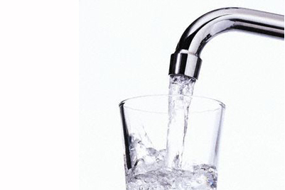

This recipe creates a deliciously refreshing, low calorie, beverage with minimal preparation time.
Even your kids will be able to make it!"

INGREDIENTS
1 Cup
1 Teaspoon of water
DIRECTIONS
- Place cup under tap
- Turn tap on
- Fill glass with water almost to top
- Turn tap off
- Top up glass with additional teaspoon of water until full
- Use paper towel to mop up any spillage
- Enjoy!
Homepage